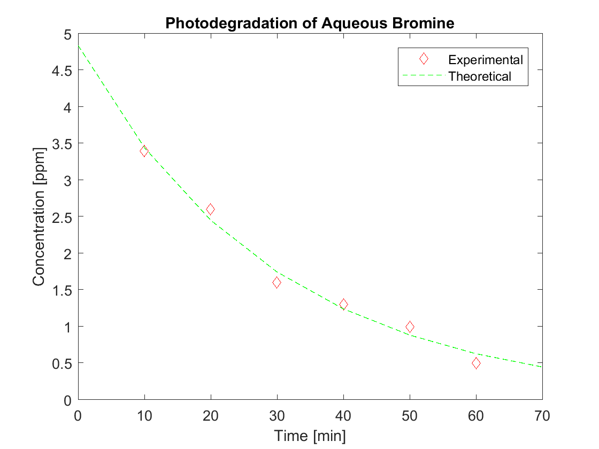

Ryan Fahrenkrug
MECH 105: Homework 2 Revision C 8/25/2017
Contents
Problem 1
clc clear % Section 1.1 q=10; % Inital Charge R=60; % Resistance L=9; % Inductance C=0.00005; % Capacitance t=0:0.1:0.8; % time from 0 to 0.8 % Charge on capacitor qt as a function of time qt=q.*exp((-R.*t)/(2*L)).*cos(sqrt((1/(L*C))-((R/(2*L))^2).*t)); plot(t,qt) title('Electrical Circuit Model'); xlabel('Time'); ylabel('Capacitor Charge');
Section 1.2
c2=0.0005; % Charge on capacitor qt as a function of time with c 10x larger qt2=q.*exp((-R.*t)/(2*L)).*cos(sqrt((1/(L*c2))-((R/(2*L))^2).*t)); subplot(2,1,1); plot(t,qt) title('Electrical Circuit Model C=0.00005'); xlabel('Time'); ylabel('Capacitor Charge'); subplot(2,1,2); plot(t,qt2) title('Electrical Circuit Model C=0.0005'); xlabel('Time'); ylabel('Capacitor Charge'); % Section 1.3 % The response went up because as the capacitance goes up the value of the % square root increase. This results in a higher capacitor charge.
Problem 2
clc clear close all tk=10:10:60; %known time intervals in minutes ck=[3.4 2.6 1.6 1.3 1.0 0.5]; %known concentration in ppm t=0:10:70; % Time in minutes c=4.84.*exp(-0.034*t); % Concentration in ppm % Plot of experimental data vs theoretical data plot(tk,ck,'rd',t,c,'g--') title('Photodegradation of Aqueous Bromine') xlabel('Time [min]') ylabel('Concentration [ppm]') legend('Experimental','Theoretical')